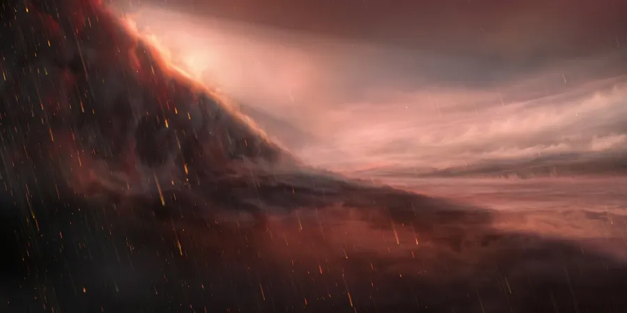

March 11, 2020
WASP-76 b: evidence for iron rain
On the ultra-hot gas giant WASP-76 b, about 640 light-years away, it probably rains iron. The planet always shows the same face to its star. On the day side, temperatures climb above 2400 degrees Celsius, so that metals vaporize; the night side is considerably cooler at about 1500 degrees.
Using the ESPRESSO spectrograph on ESO's Very Large Telescope, a team led by David Ehrenreich found iron vapor at the evening border between day and night, but not at the morning border. The interpretation: winds carry the vapor to the night side, where it condenses and rains out.
Source: ESO: "ESO Telescope Observes Exoplanet Where It Rains Iron", 2020-03-11